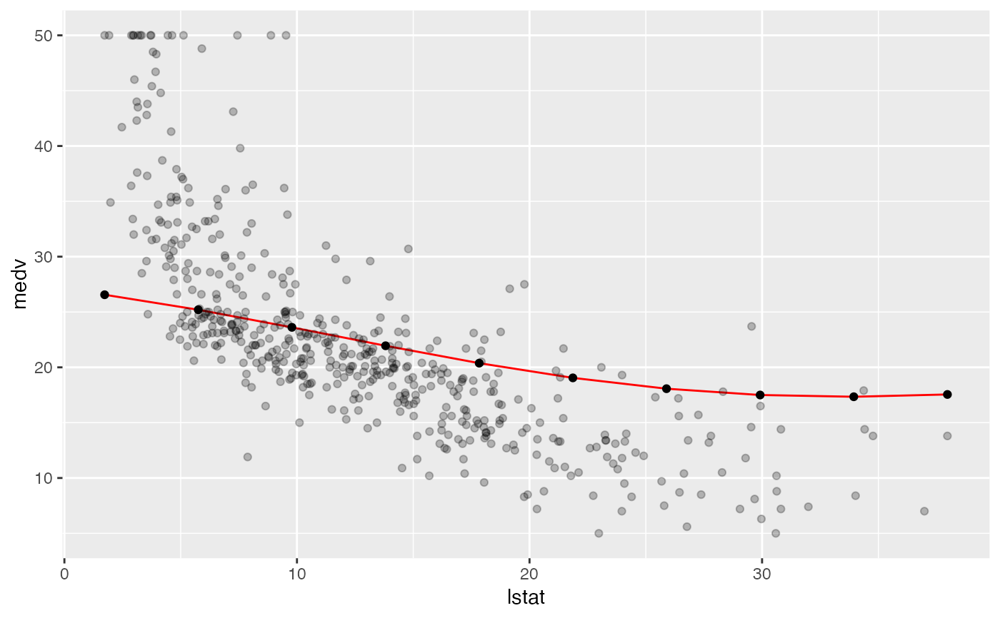
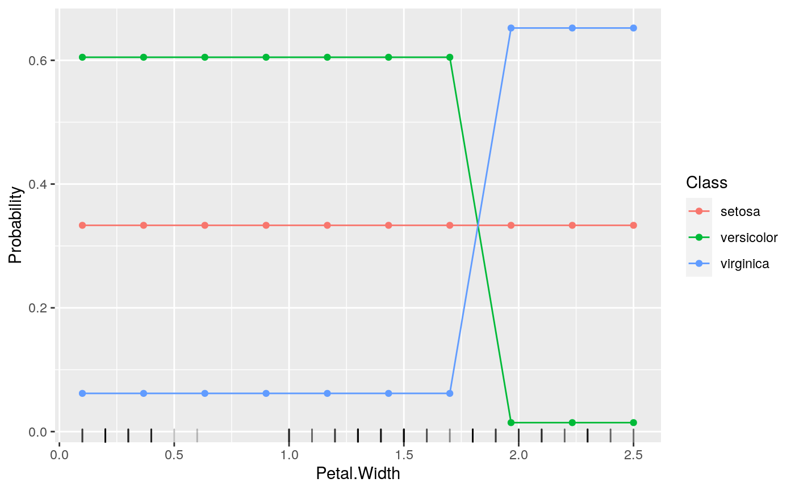

Estimate how the learned prediction function is affected by one or more features. For a learned function f(x) where x is partitioned into x_s and x_c, the partial dependence of f on x_s can be summarized by averaging over x_c and setting x_s to a range of values of interest, estimating E_(x_c)(f(x_s, x_c)). The conditional expectation of f at observation i is estimated similarly. Additionally, partial derivatives of the marginalized function w.r.t. the features can be computed.
Arguments
- obj
(WrappedModel)
Result of train.- input
(data.frame | Task)
Input data.- features
character
A vector of feature names contained in the training data. If not specified all features in theinputwill be used.- interaction
(
logical(1))
Whether thefeaturesshould be interacted or not. IfTRUEthen the Cartesian product of the prediction grid for each feature is taken, and the partial dependence at each unique combination of values of the features is estimated. Note that if the length offeaturesis greater than two, plotPartialDependence cannot be used. IfFALSEeach feature is considered separately. In this casefeaturescan be much longer than two. Default isFALSE.- derivative
(
logical(1))
Whether or not the partial derivative of the learned function with respect to the features should be estimated. IfTRUEinteractionmust beFALSE. The partial derivative of individual observations may be estimated. Note that computation time increases as the learned prediction function is evaluated atgridsizepoints * the number of points required to estimate the partial derivative. Additional arguments may be passed to numDeriv::grad (for regression or survival tasks) or numDeriv::jacobian (for classification tasks). Note that functions which are not smooth may result in estimated derivatives of 0 (for points where the function does not change within +/- epsilon) or estimates trending towards +/- infinity (at discontinuities). Default isFALSE.- individual
(
logical(1))
Whether to plot the individual conditional expectation curves rather than the aggregated curve, i.e., rather than aggregating (usingfun) the partial dependences offeatures, plot the partial dependences of all observations indataacross all values of thefeatures. The algorithm is developed in Goldstein, Kapelner, Bleich, and Pitkin (2015). Default isFALSE.- fun
functionA function which operates on the output on the predictions made on the
inputdata. For regression this means a numeric vector, and, e.g., for a multiclass classification problem, this migh instead be probabilities which are returned as a numeric matrix. This argument can return vectors of arbitrary length, however, if their length is greater than one, they must by named, e.g.,fun = meanorfun = function(x) c("mean" = mean(x), "variance" = var(x)). The default is the mean, unlessobjis classification withpredict.type = "response"in which case the default is the proportion of observations predicted to be in each class.- bounds
(
numeric(2))
The value (lower, upper) the estimated standard error is multiplied by to estimate the bound on a confidence region for a partial dependence. Ignored ifpredict.type != "se"for the learner. Default is the 2.5 and 97.5 quantiles (-1.96, 1.96) of the Gaussian distribution.- uniform
(
logical(1))
Whether or not the prediction grid for thefeaturesis a uniform grid of sizen[1]or sampled with replacement from theinput. Default isTRUE.- n
(
integer21)
The first element ofngives the size of the prediction grid created for each feature. The second element ofngives the size of the sample to be drawn without replacement from theinputdata. Settingn[2]less than the number of rows in theinputwill decrease computation time. The default forn[1]is 10, and the default forn[2]is the number of rows in theinput.- ...
additional arguments to be passed to mmpf::marginalPrediction.
Value
PartialDependenceData. A named list, which contains the partial dependence, input data, target, features, task description, and other arguments controlling the type of partial dependences made. Object members:
- data
data.frame
Has columns for the prediction: one column for regression and survival analysis, and a column for class and the predicted probability for classification as well as a a column for each element offeatures. Ifindividual = TRUEthen there is an additional columnidxwhich gives the index of thedatathat each prediction corresponds to.- task.desc
TaskDesc
Task description.- target
Target feature for regression, target feature levels for classification, survival and event indicator for survival.
- features
character
Features argument input.- interaction
(
logical(1))
Whether or not the features were interacted (i.e. conditioning).- derivative
(
logical(1))
Whether or not the partial derivative was estimated.- individual
(
logical(1))
Whether the partial dependences were aggregated or the individual curves are retained.
References
Goldstein, Alex, Adam Kapelner, Justin Bleich, and Emil Pitkin. “Peeking inside the black box: Visualizing statistical learning with plots of individual conditional expectation.” Journal of Computational and Graphical Statistics. Vol. 24, No. 1 (2015): 44-65.
Friedman, Jerome. “Greedy Function Approximation: A Gradient Boosting Machine.” The Annals of Statistics. Vol. 29. No. 5 (2001): 1189-1232.
See also
Other partial_dependence:
plotPartialDependence()
Other generate_plot_data:
generateCalibrationData(),
generateCritDifferencesData(),
generateFeatureImportanceData(),
generateFilterValuesData(),
generateLearningCurveData(),
generateThreshVsPerfData(),
plotFilterValues()
Examples
lrn = makeLearner("regr.svm")
fit = train(lrn, bh.task)
pd = generatePartialDependenceData(fit, bh.task, "lstat")
#> Loading required package: mmpf
plotPartialDependence(pd, data = getTaskData(bh.task))

lrn = makeLearner("classif.rpart", predict.type = "prob")
fit = train(lrn, iris.task)
pd = generatePartialDependenceData(fit, iris.task, "Petal.Width")
plotPartialDependence(pd, data = getTaskData(iris.task))
